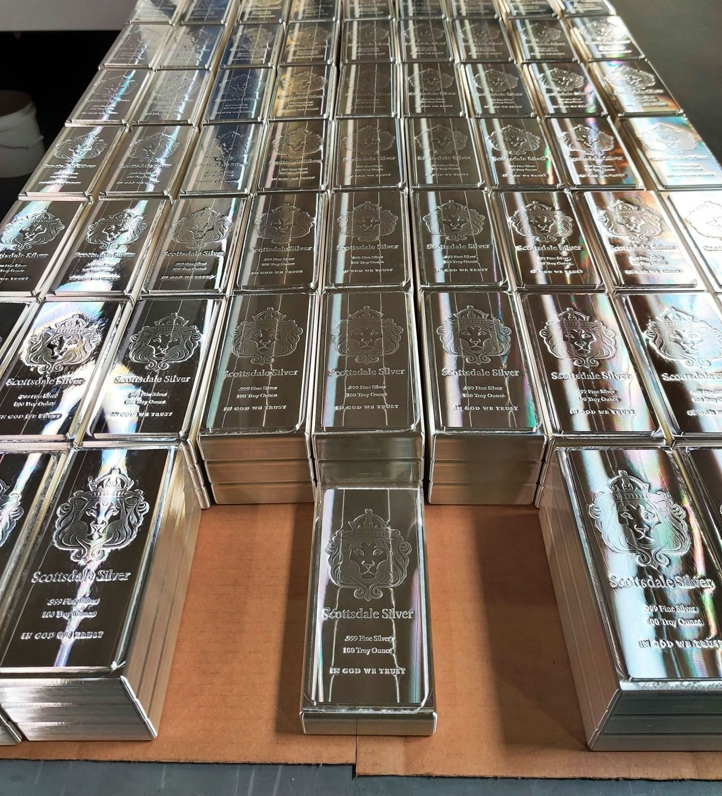

<!doctype html>
<html lang="fr" data-resolution="portrait">
  <head>
    <meta charset="UTF-8" />
    <meta name="viewport" content="width=1080, height=1920" />
    <script src="assets/gsap.min.js"></script>
    <script src="assets/vo-words.js"></script>
    <script src="assets/series.js"></script>
    <script src="assets/data.js"></script>
    <style>
      /* Reel « Le guide de la culture financière, épisode 12 » : l'argent rebondit sur sa moyenne mobile 200 semaines (86 s).
         Hook comme le reel sur l'or : la chute de l'argent se dessine en direct, cours qui défile, puis la ligne apparaît. Fond blanc, bleu sombre pour les temps forts. */
      @font-face { font-family: "Helv"; src: local("Helvetica Bold"), local("Helvetica-Bold"), url("assets/fonts/NimbusSans-Bold.otf"); font-weight: 700; }
      @font-face { font-family: "Plex"; src: url("assets/fonts/IBMPlexMono-Bold.ttf"); font-weight: 700; }
      @font-face { font-family: "Lora"; src: url("assets/fonts/Lora.ttf"); font-weight: 400 700; }
      @font-face { font-family: "Display"; src: url("assets/fonts/inter-display-latin-var.woff2"); font-weight: 100 900; }
      * { margin: 0; padding: 0; box-sizing: border-box; }
      html, body { width: 1080px; height: 1920px; overflow: hidden; background: #fff; }
      #root { width: 1080px; height: 1920px; position: relative; overflow: hidden; font-family: "Display", sans-serif; color: #0b1f44; background: #fff; font-feature-settings: "tnum" 1; -webkit-font-smoothing: antialiased; }
      .a { position: absolute; }
      .scene { position: absolute; inset: 0; opacity: 0; overflow: hidden; }
      svg { position: absolute; overflow: visible; }
      svg text { font-family: "Display"; font-feature-settings: "tnum" 1; }
      .src { position: absolute; left: 100px; right: 100px; font-size: 28px; font-weight: 600; color: #6b7280; }
      .w { color: #fff; }
      .pill { display: inline-block; padding: 8px 24px 12px; border-radius: 999px; font-weight: 800; letter-spacing: -.02em; }
      #avatar { position: absolute; left: 380px; top: 380px; width: 320px; height: 320px; opacity: 0; }
      #avatar .pic { position: absolute; left: 20px; top: 20px; width: 280px; height: 280px; border-radius: 50%; overflow: hidden; border: 8px solid #000a1f; }
      #avatar .pic img { width: 100%; height: 100%; display: block; }
      .cap-line { position: absolute; left: 100px; right: 100px; top: 1400px; text-align: center; opacity: 0; }
      .cap-box { display: inline-block; padding: 8px 22px 13px; border-radius: 4px; background: rgba(30,34,42,.78); font-weight: 700; font-size: 52px; line-height: 1.12; letter-spacing: -.05em; color: #fff; white-space: nowrap; }
    </style>
  </head>
  <body>
    <div id="root" data-composition-id="main" data-start="0" data-duration="78.5" data-width="1080" data-height="1920">
      <audio id="vo" src="assets/voix.mp3" data-start="0" data-duration="78.5" data-track-index="1"></audio>
      <div id="stage" class="clip" data-start="0" data-duration="78.5" data-track-index="2" style="position:absolute; inset:0; background:#fff"></div>
      <video id="v-lingots" class="clip" src="assets/video/lingots.mp4" data-start="13.61" data-duration="1.9" data-track-index="3" muted playsinline style="position:absolute; inset:0; width:1080px; height:1920px; object-fit:cover"></video>
      <div id="top" class="clip" data-start="0" data-duration="78.5" data-track-index="4" style="position:absolute; inset:0; pointer-events:none"></div>
    </div>
    <script>
      (function () {
        var NS = "http://www.w3.org/2000/svg", tl = gsap.timeline({ paused: true }), END = 78.5;
        var st = document.getElementById("stage"), top = document.getElementById("top");
        var INK = "#0b1f44", SOFT = "#6b7280", VERT = "#00c853", ROUGE = "#ff1744", OR2 = "#ffab00", OR2T = "#f59f00", GRIS = "#c5cad3";
        var NAVY = "radial-gradient(ellipse 80% 55% at 50% 42%, #0d2a63 0%, #071634 60%, #030b1d 100%)";
        var AMF = "Avis de la rédaction. Ceci n'est pas un conseil en investissement.";
        function div(p, html, style, cls) { var d = document.createElement("div"); d.className = cls || "a"; d.innerHTML = html; d.setAttribute("style", style || ""); p.appendChild(d); return d; }
        function el(s, tag, a, text) { var e = document.createElementNS(NS, tag); for (var k in a) e.setAttribute(k, a[k]); if (text != null) e.textContent = text; s.appendChild(e); return e; }
        function svg(p, x, y, w, h) { var g = document.createElementNS(NS, "svg"); g.setAttribute("width", w); g.setAttribute("height", h); g.style.left = x + "px"; g.style.top = y + "px"; p.appendChild(g); return g; }
        function fade(n, t, d) { tl.fromTo(n, { opacity: 0 }, { opacity: 1, duration: d || .3, ease: "power1.out", immediateRender: false }, t); return n; }
        function out(n, t, d) { tl.to(n, { opacity: 0, duration: d || .2 }, t); return n; }
        function rise(n, t, d) { tl.fromTo(n, { opacity: 0, y: 30 }, { opacity: 1, y: 0, duration: d || .4, ease: "power3.out", immediateRender: false }, t); return n; }
        function pop(n, t) { tl.fromTo(n, { opacity: 0, scale: .7 }, { opacity: 1, scale: 1, duration: .35, ease: "back.out(2)", immediateRender: false }, t); return n; }
        function sc(t0, t1, p) { var s = div(p || st, "", "", "scene"); tl.set(s, { opacity: 1 }, t0); tl.set(s, { opacity: 0 }, t1); return s; }
        function draw(p, t, d, ease) { var L = p.getTotalLength(); p.style.strokeDasharray = L + " " + L; p.style.strokeDashoffset = L; tl.fromTo(p, { strokeDashoffset: L }, { strokeDashoffset: 0, duration: d, ease: ease || "power1.inOut", immediateRender: false }, t); tl.set(p, { strokeDasharray: "none" }, t + d + .02); return p; }
        function fr(v, dec) { var s = v.toFixed(dec || 0).split("."); return s[0].replace(/\B(?=(\d{3})+(?!\d))/g, " ") + (s[1] ? "," + s[1] : ""); }
        // style FT : trait vertical fin, du texte au point annoté, sans marqueur
        function hair(g, x, y1, y2, col, t) { var l = el(g, "line", { x1: x, x2: x, y1: y1, y2: y1, stroke: col || INK, "stroke-width": 2, "stroke-opacity": .6 }); tl.fromTo(l, { attr: { y2: y1 } }, { attr: { y2: y2 }, duration: .35, ease: "power2.out", immediateRender: false }, t); return l; }
        // annotation FT : trait fin + texte, qui apparaissent et disparaissent ensemble
        function note(p, g, x, yFrom, yTo, html, align, top, tIn, tOut) {
          var l = el(g, "line", { x1: x, x2: x, y1: yFrom, y2: yFrom, stroke: INK, "stroke-width": 2, "stroke-opacity": .6, opacity: 0 });
          var d = div(p, html, (align === "right" ? "left:" + (x - 616) + "px; width:600px; text-align:right" : "left:" + (x + 16) + "px") + "; top:" + top + "px; opacity:0");
          tl.set(l, { opacity: 1 }, tIn); tl.fromTo(l, { attr: { y2: yFrom } }, { attr: { y2: yTo } , duration: .3, ease: "power2.out", immediateRender: false }, tIn);
          tl.fromTo(d, { opacity: 0, y: 8 }, { opacity: 1, y: 0, duration: .3, ease: "power2.out", immediateRender: false }, tIn);
          if (tOut != null) tl.to([l, d], { opacity: 0, duration: .2 }, tOut);
          return { l: l, d: d }; }
        function circ(g, x, y, t, r) { var c = el(g, "circle", { cx: x, cy: y, r: 0, fill: "#fff", stroke: OR2, "stroke-width": 5 }); tl.fromTo(c, { attr: { r: 0 } }, { attr: { r: r || 14 }, duration: .25, ease: "back.out(2)", immediateRender: false }, t); return c; }
        function source(s, txt) { div(s, txt, "top:1320px", "src"); }

        // ================= 1. Graphique « caméra » de l'argent (cours quotidiens + moyenne mobile 200 semaines) =================
        var B = window.AG.d, N = B.length, LAST = N - 1, LG = Math.log10, HIGH = 121.3;
        function idx(d) { for (var i = 0; i < N; i++) if (B[i][0] >= d) return i; return N - 1; }
        var PEAK = 0; B.forEach(function (r, i) { if (r[1] > B[PEAK][1]) PEAK = i; });
        var LOW = PEAK; for (var i = PEAK; i < N; i++) if (B[i][1] < B[LOW][1]) LOW = i;
        var T24 = idx("2024-02-20"), T26 = idx("2026-02-17");
        var cs = div(st, "", "inset:0; opacity:0");
        var PX = 100, PY = 600, PW = 760, PH = 620;
        var g = svg(cs, 0, 0, 1080, 1920), defs = el(g, "defs", {});
        var cp = el(defs, "clipPath", { id: "plot" }); el(cp, "rect", { x: PX - 10, y: PY - 80, width: PW + 20, height: PH + 80 });
        var gr = el(defs, "linearGradient", { id: "fall", x1: 0, y1: 0, x2: 0, y2: 1 }); el(gr, "stop", { offset: 0, "stop-color": ROUGE, "stop-opacity": .2 }); el(gr, "stop", { offset: 1, "stop-color": ROUGE, "stop-opacity": 0 });
        var axis = el(g, "g", {}), plot = el(g, "g", { "clip-path": "url(#plot)" });
        el(g, "line", { x1: PX, x2: PX + PW, y1: PY + PH, y2: PY + PH, stroke: INK, "stroke-width": 2.5 });
        var area = el(plot, "path", { fill: "url(#fall)" });
        var pMA = el(plot, "path", { fill: "none", stroke: OR2, "stroke-width": 6, "stroke-linejoin": "round", "stroke-linecap": "round" });
        var pOld = el(plot, "path", { fill: "none", stroke: INK, "stroke-width": 6, "stroke-linejoin": "round" });
        var pNew = el(plot, "path", { fill: "none", stroke: ROUGE, "stroke-width": 7, "stroke-linejoin": "round" });
        var pUp = el(plot, "path", { fill: "none", stroke: VERT, "stroke-width": 8, "stroke-linejoin": "round", "stroke-linecap": "round" });
        var p24 = el(plot, "path", { fill: "none", stroke: VERT, "stroke-width": 8, "stroke-linejoin": "round", "stroke-linecap": "round" });
        var head = el(g, "circle", { r: 10, fill: "#fff", stroke: ROUGE, "stroke-width": 4.5, opacity: 0 });
        var cLow = el(g, "line", { stroke: INK, "stroke-width": 2, "stroke-opacity": .6 }), c24 = el(g, "line", { stroke: INK, "stroke-width": 2, "stroke-opacity": .6 }), HT = { low: 540, t24: 900 };
        var S = { a: idx("2025-08-01"), b: LAST + 12, lo: LG(30), hi: LG(135), p: PEAK, m: 0, up: 0, u24: 0, rl: 0, r24: 0, oldDim: 1 };
        function X(i) { return PX + (i - S.a) / (S.b - S.a) * PW; }
        function Y(v) { return PY + PH - (LG(v) - S.lo) / (S.hi - S.lo) * PH; }
        function val(i) { var f = Math.floor(i), c = Math.min(f + 1, LAST); return B[f][1] + (B[c][1] - B[f][1]) * (i - f); }
        function path(i0, i1, k) { k = k || 1; var d = "", s = Math.max(0, Math.floor(Math.max(i0, S.a - 2))), e = Math.min(i1, S.b + 2); if (e <= s) return "";
          for (var i = s; i < e; i++) d += (d ? "L" : "M") + X(i).toFixed(1) + " " + Y(B[i][k]).toFixed(1);
          var vE = k === 1 ? val(e) : B[Math.min(Math.ceil(e), LAST)][k]; return d + (d ? "L" : "M") + X(e).toFixed(1) + " " + Y(vE).toFixed(1); }
        var YT = [20, 30, 40, 60, 80, 100, 120], MO = ["janv.", "févr.", "mars", "avr.", "mai", "juin", "juil.", "août", "sept.", "oct.", "nov.", "déc."];
        var ticker, pct;
        function render() {
          axis.textContent = ""; var lastY = 1e9;
          YT.forEach(function (v) { var y = Y(v); if (y < PY - 10 || y > PY + PH - 20 || lastY - y < 56) return; lastY = y;
            el(axis, "line", { x1: PX, x2: PX + PW, y1: y, y2: y, stroke: "#eceef2", "stroke-width": 1.5 });
            el(axis, "text", { x: 980, y: y + 9, "font-size": 28, fill: SOFT, "font-weight": 600, "text-anchor": "end" }, v + " $"); });
          var span = S.b - S.a, step = span > 500 ? 12 : span > 200 ? 6 : span > 90 ? 3 : 1, lastX = -1e9;
          for (var i = Math.max(1, Math.ceil(S.a)); i <= Math.min(LAST, S.b); i++) { var d0 = B[i - 1][0], d1 = B[i][0];
            if (d1.slice(5, 7) !== d0.slice(5, 7)) { var mo = +d1.slice(5, 7); if ((mo - 1) % step !== 0) continue; var lab = mo === 1 ? d1.slice(0, 4) : MO[mo - 1];
              if (X(i) - lastX > 110 && X(i) > PX + 30 && X(i) < PX + PW - 30) { lastX = X(i); el(axis, "text", { x: X(i), y: PY + PH + 50, "font-size": 28, fill: SOFT, "font-weight": 600, "text-anchor": "middle" }, lab); } } }
          pOld.setAttribute("d", path(0, Math.min(S.p, PEAK))); pOld.style.opacity = S.oldDim;
          var dn = S.p > PEAK ? path(PEAK, Math.min(S.p, LOW)) : ""; pNew.setAttribute("d", dn);
          area.setAttribute("d", dn ? dn + "L" + X(Math.min(S.p, LOW)).toFixed(1) + " " + (PY + PH) + "L" + X(PEAK).toFixed(1) + " " + (PY + PH) + "Z" : "");
          pMA.setAttribute("d", S.m > 0 ? path(S.a, S.a + (LAST - S.a) * S.m, 2) : "");
          pUp.setAttribute("d", S.up > 0 ? path(LOW, LOW + (LAST - LOW) * S.up) : "");
          p24.setAttribute("d", S.u24 > 0 ? path(T24, T24 + (T26 - T24) * S.u24) : "");
          var hp = S.up > 0 ? LOW + (LAST - LOW) * S.up : Math.min(S.p, LOW); head.setAttribute("cx", X(hp)); head.setAttribute("cy", Y(val(hp))); head.setAttribute("stroke", S.up > 0 ? VERT : ROUGE);
          var yL = Y(B[LOW][1]) - 16; cLow.setAttribute("x1", X(LOW)); cLow.setAttribute("x2", X(LOW)); cLow.setAttribute("y1", HT.low); cLow.setAttribute("y2", HT.low + (yL - HT.low) * S.rl); cLow.style.opacity = S.rl > 0 ? 1 : 0;
          var y4 = Y(B[T24][1]) - 16; c24.setAttribute("x1", X(T24)); c24.setAttribute("x2", X(T24)); c24.setAttribute("y1", HT.t24); c24.setAttribute("y2", HT.t24 + (y4 - HT.t24) * S.r24); c24.style.opacity = S.r24 > 0 ? 1 : 0;
          if (ticker) { var v = val(hp); ticker.textContent = fr(v, 2) + " $"; pct.textContent = "−" + Math.max(0, Math.round((1 - v / HIGH) * 100)) + " %"; }
        }
        function cam(t, a, b, lo, hi, d) { tl.to(S, { a: a, b: b, lo: LG(lo), hi: LG(hi), duration: d || .8, ease: "power2.inOut" }, t); }
        tl.eventCallback("onUpdate", render);
        var srcC = div(cs, "Argent, contrat à terme · Clôtures quotidiennes · Source : Yahoo Finance", "top:1320px", "src");
        // en-tête : l'once d'argent, cours qui défile, baisse depuis le record
        var hd = div(cs, "", "left:100px; top:330px; width:880px; height:220px");
        div(hd, "<svg width='48' height='48' viewBox='0 0 64 64' style='position:static; vertical-align:middle'><circle cx='32' cy='32' r='32' fill='#aeb6c2'/><circle cx='32' cy='32' r='22' fill='none' stroke='#fff' stroke-width='3' stroke-opacity='.8'/></svg><span style='vertical-align:middle; margin-left:14px; font-size:40px; font-weight:700; letter-spacing:-.04em'>Argent · l'once</span>", "left:0; top:0");
        ticker = div(hd, "", "left:0; top:72px; font-size:100px; font-weight:800; letter-spacing:-.055em; line-height:1; white-space:nowrap");
        pct = div(hd, "", "right:0; top:92px; padding:4px 16px 8px; border-radius:6px; background:rgba(255,23,68,.1); color:" + ROUGE + "; font-size:46px; font-weight:800; letter-spacing:-.04em; white-space:nowrap");
        var hdUp = div(hd, "+11 %", "right:0; top:92px; padding:4px 16px 8px; border-radius:6px; background:rgba(0,200,83,.12); color:#00a344; font-size:46px; font-weight:800; letter-spacing:-.04em; white-space:nowrap; opacity:0");

        // ===== HOOK (0 → 10,63) =====
        tl.set(cs, { opacity: 1 }, 0);
        // « L'argent a perdu jusqu'à 67 % depuis son record » : la chute se dessine, le cours défile
        tl.fromTo(S, { p: PEAK }, { p: LOW, duration: 2.7, ease: "power1.in" }, 0);
        tl.fromTo(g, { scale: 1.03, transformOrigin: "50% 50%" }, { scale: 1, duration: 3.2, ease: "power1.out" }, 0);
        // « Mais regardez bien cette ligne » : la moyenne mobile (non nommée) se dessine en orange
        tl.to(S, { m: 1, duration: .9, ease: "power2.out" }, 3.6);
        // « car il vient de rebondir pile dessus » : le rebond en vert, petit cercle orange sur le point bas
        tl.to(S, { up: 1, duration: .8, ease: "power2.out" }, 5.5); 
        // « Et la dernière fois qu'il l'a touchée, son prix a plus que triplé en deux ans » : on dézoome jusqu'à 2024
        cam(6.8, idx("2023-06-01"), LAST + 20, 17, 135, 1.0); 
        tl.to(S, { u24: 1, oldDim: .35, duration: 1.1, ease: "power1.inOut" }, 8.4);
        var A1 = idx("2023-06-01"), X24 = PX + (T24 - A1) / (LAST + 20 - A1) * PW;
        var YH = function (v) { return PY + PH - (LG(v) - LG(17)) / (LG(135) - LG(17)) * PH; };
        var n24 = note(cs, g, X24, YH(B[T24][1]) - 16, 900, "<div style='font-size:40px; font-weight:800; letter-spacing:-.03em'>Février 2024</div>", "left", 790, 7.9, null);
        var x3 = div(n24.d, "×3,6 en deux ans", "position:relative; margin-top:6px; font-size:44px; font-weight:800; letter-spacing:-.03em; color:#00a344; opacity:0"); fade(x3, 9.3, .3);
        tl.to([n24.l, n24.d, cs], { opacity: 0, duration: .15 }, 10.5);

        // ===== 2. Générique « épisode 12 » (10,63 → 13,7) =====
        (function () { var t0 = 10.56, s = sc(t0, 13.61); s.style.background = "#f2f2f4";
          div(s, "<svg width='1080' height='1920' style='position:absolute; inset:0'><filter id='gr2'><feTurbulence type='fractalNoise' baseFrequency='.9' numOctaves='2' stitchTiles='stitch'/><feColorMatrix values='0 0 0 0 0  0 0 0 0 0  0 0 0 0 0  0 0 0 .09 0'/></filter><rect width='1080' height='1920' filter='url(#gr2)'/></svg>", "inset:0");
          div(s, "", "inset:0; background:radial-gradient(ellipse 75% 60% at 50% 48%, rgba(0,0,0,0) 55%, rgba(0,0,0,.1) 100%)");
          var gg = svg(s, 0, 0, 1080, 1920), SE = window.SER;
          function line(v, y0, y1, op, w, t, dur) { var lo = Math.min.apply(0, v), hi = Math.max.apply(0, v), d = "";
            v.forEach(function (x, i) { var XX = -20 + i / (v.length - 1) * 1120, YY = y1 - (Math.log(x) - Math.log(lo)) / (Math.log(hi) - Math.log(lo)) * (y1 - y0); d += (i ? "L" : "M") + XX.toFixed(1) + " " + YY.toFixed(1); });
            draw(el(gg, "path", { d: d, fill: "none", stroke: "#7c96e6", "stroke-width": w, "stroke-opacity": op, "stroke-linejoin": "round" }), t, dur, "power1.out"); }
          line(SE.vix, 60, 640, .75, 3.5, t0, 2.4); line(SE.ndx, 1180, 1880, .35, 3, t0 + .1, 2.6); line(SE.spx, 1250, 1860, .75, 3.5, t0, 2.6);
          var blk = div(s, "", "left:0; right:0; margin:auto; width:max-content; top:720px");
          var row = div(blk, "", "position:relative; font-family:Helv, Helvetica, sans-serif; font-size:78px; font-weight:700; letter-spacing:-.035em; line-height:1.15; color:#00194B; white-space:nowrap; text-align:left");
          ["le", "guide", "de", "la", "culture"].forEach(function (w, k) { var sp = document.createElement("span"); sp.textContent = w + (k < 4 ? " " : ""); sp.style.display = "inline-block"; sp.style.whiteSpace = "pre"; sp.style.opacity = 0; row.appendChild(sp);
            tl.fromTo(sp, { opacity: 0, y: 24 }, { opacity: 1, y: 0, duration: .45, ease: "power3.out", immediateRender: false }, t0 + [.45, .57, .77, .89, 1.0][k]); });
          var box = div(blk, "", "position:relative; margin-top:10px; background:#00194B; text-align:center; padding:10px 0 22px; font-family:Plex; font-size:116px; font-weight:700; line-height:1; color:#fff");
          "financière".split("").forEach(function (c, k) { var sp = document.createElement("span"); sp.textContent = c; sp.style.opacity = 0; box.appendChild(sp);
            tl.fromTo(sp, { opacity: 0 }, { opacity: 1, duration: .18, ease: "power1.out", immediateRender: false }, t0 + 1.4 + k * .035); });
          box.style.clipPath = "inset(0 100% 0 0)";
          tl.fromTo(box, { clipPath: "inset(0 100% 0 0)" }, { clipPath: "inset(0 0% 0 0)", duration: .5, ease: "power3.inOut", immediateRender: false }, t0 + 1.2);
          var ep = div(blk, "épisode 12", "position:relative; margin-top:14px; text-align:right; font-family:Lora, serif; font-size:56px; font-weight:400; letter-spacing:.01em; color:#00194B; opacity:0");
          tl.fromTo(ep, { opacity: 0, y: 14 }, { opacity: 1, y: 0, duration: .45, ease: "power3.out", immediateRender: false }, t0 + 2.1); })();

        // graphique simple « éditorial » pour une série [date, valeur]
        function chart(s, R, o) { var L = R.length - 1, X = function (i) { return 100 + i / (L + (o.pad || 12)) * 760; }, Y = function (v) { return 560 + 640 - (v - o.lo) / (o.hi - o.lo) * 640; }, g = svg(s, 0, 0, 1080, 1920);
          div(s, o.name, "left:100px; top:290px; font-size:78px; font-weight:800; letter-spacing:-.04em; line-height:1");
          div(s, o.sub, "left:100px; top:390px; font-size:34px; font-weight:500; color:" + SOFT);
          o.ticks.forEach(function (v) { el(g, "line", { x1: 100, x2: 980, y1: Y(v), y2: Y(v), stroke: "#eceef2", "stroke-width": 1.5 }); el(g, "text", { x: 980, y: Y(v) - 12, "font-size": 28, fill: SOFT, "font-weight": 600, "text-anchor": "end" }, o.tf(v)); });
          el(g, "line", { x1: 100, x2: 980, y1: 1200, y2: 1200, stroke: INK, "stroke-width": 2.5 });
          var lx = -1e9; R.forEach(function (r, i) { if (i && r[0].slice(5, 7) !== R[i - 1][0].slice(5, 7) && (+r[0].slice(5, 7) - 1) % 6 === 0 && X(i) - lx > 120) { lx = X(i); el(g, "text", { x: X(i), y: 1250, "font-size": 28, fill: SOFT, "font-weight": 600, "text-anchor": "middle" }, r[0].slice(5, 7) === "01" ? r[0].slice(0, 4) : "juil."); } });
          function pth(a, b) { var d = ""; for (var i = a; i <= b; i++) d += (d ? "L" : "M") + X(i).toFixed(1) + " " + Y(R[i][1]).toFixed(1); return d; }
          var k = 0; R.forEach(function (r, i) { if (r[0] <= o.cut) k = i; });
          el(g, "path", { d: pth(0, k), fill: "none", stroke: GRIS, "stroke-width": 6, "stroke-linejoin": "round" });
          draw(el(g, "path", { d: pth(k, L), fill: "none", stroke: ROUGE, "stroke-width": 7, "stroke-linejoin": "round" }), o.t, o.d || 1.2);
          return { g: g, X: X, Y: Y, k: k, L: L }; }

        // ===== 3. « En janvier, l'once d'argent dépassait les 120 dollars » : lingots (vidéo), puis le record =====
        tl.set(S, { a: idx("2025-09-15"), b: LAST + 12, lo: LG(30), hi: LG(135), p: LOW, m: 0, up: 0, u24: 0, rl: 0, r24: 0, oldDim: 1 }, 15.45);
        tl.set(cs, { opacity: 1 }, 15.5); tl.set(hd, { opacity: 0 }, 15.5);
        var A0 = idx("2025-09-15"), XP = function (i) { return PX + (i - A0) / (LAST + 12 - A0) * PW; }, YP = function (v) { return PY + PH - (LG(v) - LG(30)) / (LG(135) - LG(30)) * PH; };
        note(cs, g, XP(PEAK), YP(B[PEAK][1]) - 16, HT.low, "<div style='font-size:56px; font-weight:800; letter-spacing:-.04em'>121 $</div><div style='font-size:30px; font-weight:600; color:" + SOFT + "'>record, 29 janvier</div>", "left", HT.low - 110, 15.55, 17.2);
        // « Mercredi, elle est tombée à 40 dollars, pile sur cette ligne, la moyenne mobile 200 semaines, c'est le prix moyen de l'argent sur quatre ans »
        note(cs, g, XP(LOW), YP(B[LOW][1]) - 16, HT.low, "<div style='font-size:56px; font-weight:800; letter-spacing:-.04em; color:" + ROUGE + "'>40 $</div><div style='font-size:30px; font-weight:600; color:" + SOFT + "'>mercredi 25 novembre</div>", "right", HT.low - 110, 17.6, 19.5);
        tl.to(S, { m: 1, duration: .9, ease: "power2.out" }, 18.9);
        var maLab = div(cs, "<span style='display:inline-block; width:46px; height:7px; border-radius:4px; background:" + OR2 + "; vertical-align:middle; margin-right:16px'></span><span style='vertical-align:middle'>Moyenne mobile 200 semaines</span><div style='margin:8px 0 0 62px; font-size:32px; font-weight:600; color:" + SOFT + "'>le prix moyen sur quatre ans</div>", "left:100px; top:400px; font-size:40px; font-weight:800; letter-spacing:-.03em; color:" + OR2T + "; opacity:0"); fade(maLab, 19.7, .3);
        tl.set(maLab.lastChild, { opacity: 0 }, 0); fade(maLab.lastChild, 21.3, .3);
        tl.set([maLab], { opacity: 0 }, 23.11); tl.set(cs, { opacity: 0 }, 23.11);

        // ===== 4. « Et cette chute s'explique par trois raisons » (fond bleu sombre) =====
        (function () { var s = sc(23.11, 24.91); s.style.background = NAVY;
          pop(div(s, "3 raisons", "left:0; right:0; top:790px; text-align:center; font-size:190px; font-weight:800; letter-spacing:-.05em; line-height:1; opacity:0", "a w"), 24.25); })();

        // ===== 5. « D'abord, les taux américains. Une obligation d'État américaine rapporte aujourd'hui près de 5 % » =====
        (function () { var s = sc(24.91, 31.06), c = chart(s, window.AG.tnx, { name: "Taux à 10 ans", sub: "Obligation d'État américaine, en %", lo: 3.8, hi: 5.6, ticks: [4, 4.5, 5, 5.5], tf: function (v) { return fr(v, 1) + " %"; }, cut: "2026-07-01", t: 25.6 });
          var h5 = el(c.g, "line", { x1: 100, x2: c.X(c.L) + 40, y1: c.Y(5), y2: c.Y(5), stroke: OR2, "stroke-width": 4, "stroke-dasharray": "14 10", opacity: 0 }); fade(h5, 29.0, .3);
          fade(div(s, "5 %", "left:110px; top:" + (c.Y(5) - 60) + "px; font-size:40px; font-weight:800; color:" + OR2T + "; opacity:0"), 29.1, .25);
          source(s, "Source : Yahoo Finance · clôtures quotidiennes"); })();

        // ===== 6. « Alors les investisseurs vendent leurs métaux, qui ne rapportent rien, pour acheter ces obligations » (fond gris clair) =====
        (function () { var s = sc(31.06, 35.19); s.style.background = "#f4f5f8";
          var a = div(s, "", "left:100px; top:560px; width:880px; height:230px; background:#fff; border-radius:28px; box-shadow:0 24px 60px rgba(11,31,68,.08)"); rise(a, 31.1, .35);
          div(a, "Métaux", "left:56px; top:56px; font-size:56px; font-weight:800; letter-spacing:-.03em");
          div(a, "rapportent", "left:56px; top:130px; font-size:32px; font-weight:600; color:" + SOFT);
          var z = div(a, "0 %", "right:56px; top:62px; font-size:110px; font-weight:800; letter-spacing:-.05em; line-height:1; color:" + ROUGE + "; opacity:0"); pop(z, 33.6);
          var gA = svg(s, 0, 0, 1080, 1920); draw(el(gA, "path", { d: "M540 820 V900 M515 875 L540 900 L565 875", stroke: SOFT, "stroke-width": 6, fill: "none", "stroke-linecap": "round", "stroke-linejoin": "round" }), 33.9, .3);
          var b = div(s, "", "left:100px; top:930px; width:880px; height:230px; background:#fff; border-radius:28px; box-shadow:0 24px 60px rgba(11,31,68,.08); opacity:0"); rise(b, 34.1, .35);
          div(b, "Obligations", "left:56px; top:56px; font-size:56px; font-weight:800; letter-spacing:-.03em");
          div(b, "américaines, presque sans risque", "left:56px; top:130px; font-size:32px; font-weight:600; color:" + SOFT);
          div(b, "5 %", "right:56px; top:62px; font-size:110px; font-weight:800; letter-spacing:-.05em; line-height:1; color:#00a344"); })();

        // ===== 7. « Ensuite, le dollar. Il a pris 8 % depuis janvier et vient d'atteindre son plus haut de l'année » =====
        (function () { var s = sc(35.19, 42.06), R = window.AG.dxy.filter(function (r) { return r[0] >= "2025-07-01"; });
          var c = chart(s, R, { name: "Dollar", sub: "Indice du dollar face aux grandes devises", lo: 94, hi: 106, ticks: [96, 100, 104], tf: function (v) { return String(v); }, cut: "2026-01-27", t: 36.4, d: 1.4 });
          var iHi = 0; R.forEach(function (r, i) { if (r[1] > R[iHi][1]) iHi = i; });
          var nb = div(s, "+8 %", "right:100px; top:294px; font-size:78px; font-weight:800; letter-spacing:-.04em; line-height:1; color:" + ROUGE + "; opacity:0"); fade(nb, 36.9, .25);
          note(s, c.g, c.X(iHi), c.Y(R[iHi][1]) - 16, 540, "<span style='font-size:36px; font-weight:800'>Plus haut de l'année</span>", "right", 480, 39.2, null);
          source(s, "Source : Yahoo Finance · indice DXY, clôtures quotidiennes"); })();

        // ===== 8. « Et enfin, le moral des investisseurs. En janvier, c'était l'euphorie totale » (photo de lingots) =====
        (function () { var s = sc(42.06, 46.42);
          var im = div(s, "", "inset:0");
          tl.fromTo(im, { scale: 1.08 }, { scale: 1, duration: 4.4, ease: "none", immediateRender: false }, 42.06);
          div(s, "", "inset:0; background:linear-gradient(180deg, rgba(3,11,29,.5), rgba(3,11,29,.8))");
          rise(div(s, "Le moral des<br>investisseurs", "left:0; right:0; top:700px; text-align:center; font-size:110px; font-weight:800; letter-spacing:-.05em; line-height:1; opacity:0", "a w"), 42.7);
          pop(div(s, "<span class='pill' style='background:" + VERT + "; color:#fff; font-size:52px'>Janvier : euphorie totale</span>", "left:0; right:0; top:960px; text-align:center; opacity:0"), 45.1); })();

        // ===== 9. Le RSI : 91 en janvier, sous 30 aujourd'hui (46,42 → 56,39) =====
        (function () { var s = sc(46.42, 56.39), W = window.AG.w.filter(function (r) { return r[0] >= "2019-01-01"; }), L = W.length - 1;
          var PX4 = 100, PY4 = 560, PW4 = 760, PH4 = 640, X4 = function (i) { return PX4 + i / (L + 10) * PW4; }, Y4 = function (v) { return PY4 + PH4 - v / 100 * PH4; }, g4 = svg(s, 0, 0, 1080, 1920);
          div(s, "RSI", "left:100px; top:290px; font-size:78px; font-weight:800; letter-spacing:-.04em; line-height:1");
          div(s, "Le thermomètre de l'argent, chaque semaine", "left:100px; top:390px; font-size:34px; font-weight:500; color:" + SOFT);
          el(g4, "rect", { x: PX4, y: Y4(100), width: PW4 + 120, height: Y4(70) - Y4(100), fill: VERT, "fill-opacity": .08 }); el(g4, "rect", { x: PX4, y: Y4(30), width: PW4 + 120, height: Y4(0) - Y4(30), fill: ROUGE, "fill-opacity": .08 });
          [30, 50, 70].forEach(function (v) { el(g4, "line", { x1: PX4, x2: 980, y1: Y4(v), y2: Y4(v), stroke: "#eceef2", "stroke-width": 1.5 }); el(g4, "text", { x: 980, y: Y4(v) - 12, "font-size": 28, fill: SOFT, "font-weight": 600, "text-anchor": "end" }, String(v)); });
          el(g4, "line", { x1: PX4, x2: 980, y1: PY4 + PH4, y2: PY4 + PH4, stroke: INK, "stroke-width": 2.5 });
          W.forEach(function (r, i) { if (i && r[0].slice(0, 4) !== W[i - 1][0].slice(0, 4) && +r[0].slice(0, 4) % 2 === 0) el(g4, "text", { x: X4(i), y: PY4 + PH4 + 50, "font-size": 28, fill: SOFT, "font-weight": 600, "text-anchor": "middle" }, r[0].slice(0, 4)); });
          var d = ""; W.forEach(function (r, i) { d += (i ? "L" : "M") + X4(i).toFixed(1) + " " + Y4(r[3]).toFixed(1); });
          el(g4, "path", { d: d, fill: "none", stroke: INK, "stroke-width": 5, "stroke-linejoin": "round" });
          var iMax = 0, iMin = L; W.forEach(function (r, i) { if (r[3] > W[iMax][3]) iMax = i; }); for (var k = L - 4; k <= L; k++) if (W[k][3] < W[iMin][3]) iMin = k;
          fade(div(s, "Euphorie", "left:110px; top:" + (Y4(100) + 14) + "px; font-size:34px; font-weight:800; color:#00a344"), 46.42, .01);
          note(s, g4, X4(iMax), Y4(W[iMax][3]) - 14, 510, "<span style='font-size:56px; font-weight:800; color:#00a344'>91</span><span style='font-size:30px; font-weight:600; color:" + SOFT + "; margin-left:12px'>décembre 2025</span>", "right", 440, 50.8, null);
          note(s, g4, X4(iMin), Y4(W[iMin][3]) + 14, 1160, "<span style='font-size:56px; font-weight:800; color:" + ROUGE + "'>29</span><span style='font-size:30px; font-weight:600; color:" + SOFT + "; margin-left:12px'>novembre 2026</span>", "right", 1100, 55.0, null);
          fade(div(s, "Peur", "left:110px; top:" + (Y4(30) + 14) + "px; font-size:34px; font-weight:800; color:" + ROUGE + "; opacity:0"), 55.6, .3);
          source(s, "Source : Yahoo Finance · RSI 14 semaines, calcul FinanceData"); })();

        // ===== 10. « Et c'est souvent dans ces moments-là que le marché touche son point bas » : retour au graphique du hook =====
        tl.set(S, { a: idx("2026-05-01"), b: LAST + 8, lo: LG(34), hi: LG(90), p: LOW, m: 1, up: 1, u24: 0, rl: 0, r24: 0, oldDim: 1 }, 56.35);
        tl.set(cs, { opacity: 1 }, 56.39); tl.set(hd, { opacity: 0 }, 56.39);
        var A2 = idx("2026-05-01"), XL2 = PX + (LOW - A2) / (LAST + 8 - A2) * PW;
        var YL2 = PY + PH - (LG(B[LOW][1]) - LG(34)) / (LG(90) - LG(34)) * PH;
        var pb = note(cs, g, XL2, YL2 - 16, HT.low, "<div style='font-size:56px; font-weight:800; letter-spacing:-.04em'>Point bas</div>", "right", HT.low - 80, 58.7, null);
        tl.set([pb.l, pb.d, cs], { opacity: 0 }, 59.13);

        // ===== 11. Le message (59,13 → 66,95), fond bleu sombre, mention AMF =====
        (function () { var s = sc(59.13, 66.95); s.style.background = NAVY;
          var a = div(s, "Ne cédez jamais<br>à l'euphorie.", "left:0; right:0; top:720px; text-align:center; font-size:100px; font-weight:800; letter-spacing:-.05em; line-height:1.02; opacity:0", "a w"); rise(a, 60.3); out(a, 63.5, .2);
          rise(div(s, "C'est quand tout le monde<br>a peur qu'il faut regarder.", "left:0; right:0; top:720px; text-align:center; font-size:76px; font-weight:800; letter-spacing:-.045em; line-height:1.05; opacity:0", "a w"), 64.3);
          div(s, AMF, "top:1270px; text-align:center; color:rgba(255,255,255,.7); line-height:1.3", "src"); })();

        // ===== 12. La newsletter du mardi (66,95 → 74,01) =====
        (function () { var s = sc(66.95, 74.01); s.style.background = "#f4f5f8";
          var card = div(s, "", "left:110px; top:500px; width:860px; height:720px; background:#fff; border-radius:28px; box-shadow:0 30px 80px rgba(11,31,68,.12)"); rise(card, 66.97, .4);
          div(card, "<span style='vertical-align:middle; margin-left:18px; font-size:34px; font-weight:700'>FinanceData</span>", "left:56px; top:56px");
          fade(div(card, "Chaque mardi,<br>7 h", "left:56px; top:200px; font-size:110px; font-weight:800; letter-spacing:-.05em; line-height:1; opacity:0"), 67.9, .3);
          fade(div(card, "Le moral des investisseurs, décrypté", "left:56px; right:56px; top:480px; font-size:44px; font-weight:700; letter-spacing:-.025em; line-height:1.2; color:" + INK + "; border-left:6px solid " + OR2 + "; padding-left:26px; opacity:0"), 71.5, .3);
          div(card, "La newsletter de FinanceData", "left:56px; bottom:52px; font-size:28px; font-weight:600; color:" + SOFT); })();

        // ===== 13. CTA (74,01 → fin) : commentez « GO » =====
        (function () { var t0 = 74.01, s = sc(t0, 999); s.style.background = NAVY;
          var avt = div(s, "<svg viewBox='0 0 320 320' style='position:absolute; inset:0; width:100%; height:100%'><defs><linearGradient id='gStory' x1='0' y1='1' x2='1' y2='0'><stop offset='0' stop-color='#feda75'/><stop offset='.3' stop-color='#fa7e1e'/><stop offset='.6' stop-color='#d62976'/><stop offset='1' stop-color='#962fbf'/></linearGradient></defs><circle id='ring' cx='160' cy='160' r='152' fill='none' stroke='url(#gStory)' stroke-width='10' transform='rotate(-90 160 160)'/></svg><div class='pic'></div>", "", "");
          avt.id = "avatar";
          tl.fromTo(avt, { opacity: 0, scale: .6, transformOrigin: "50% 50%" }, { opacity: 1, scale: 1, duration: .5, ease: "power3.out", immediateRender: false }, t0 + .05);
          var ring = document.getElementById("ring"), rl = 2 * Math.PI * 152; ring.style.strokeDasharray = rl + " " + rl; ring.style.strokeDashoffset = rl;
          tl.fromTo(ring, { strokeDashoffset: rl }, { strokeDashoffset: 0, duration: .8, ease: "power2.inOut", immediateRender: false }, t0 + .1);
          fade(div(s, "financedatafr", "left:0; right:0; top:730px; text-align:center; font-size:56px; font-weight:700; letter-spacing:-.04em; color:#fff; opacity:0"), t0 + .25);
          var bar = div(s, "", "left:110px; top:880px; width:860px; height:110px; border-radius:55px; background:rgba(255,255,255,.08); border:2px solid rgba(255,255,255,.18); opacity:0"); fade(bar, t0 + .4, .3); bar.setAttribute("data-layout-allow-overlap", "");
          var ph = div(bar, "Ajouter un commentaire…", "left:48px; top:0; line-height:106px; font-size:36px; color:rgba(255,255,255,.45)");
          var ty = div(bar, "", "left:48px; top:0; line-height:106px; font-size:44px; font-weight:700; color:#fff");
          var pub = div(bar, "Publier", "right:44px; top:0; line-height:106px; font-size:36px; font-weight:700; color:#0095f6; opacity:.35");
          tl.set(ph, { opacity: 0 }, 75.6); tl.set(ty, { textContent: "G" }, 75.6); tl.set(ty, { textContent: "GO" }, 75.72); tl.to(pub, { opacity: 1, duration: .1 }, 75.8);
          tl.to(pub, { scale: .9, duration: .08 }, 76.3); tl.to(pub, { scale: 1, duration: .15 }, 76.38); tl.set(ty, { textContent: "" }, 76.4); tl.set(ph, { opacity: 1 }, 76.4); tl.to(pub, { opacity: .35, duration: .1 }, 76.4);
          var cm = div(s, "<div style='position:absolute; left:110px; top:4px; font-size:30px; font-weight:700; color:#fff'>vous <span style='font-weight:400; color:rgba(255,255,255,.5)'>· à l'instant</span></div><div style='position:absolute; left:110px; top:44px; font-size:44px; font-weight:800; color:#fff'>GO</div><div style='position:absolute; right:0; top:22px; font-size:40px; color:#ff1744'>♥</div>", "left:120px; top:1060px; width:840px; height:100px; opacity:0");
          tl.fromTo(cm, { opacity: 0, y: 30 }, { opacity: 1, y: 0, duration: .4, ease: "power3.out", immediateRender: false }, 76.45); })();

        // ===== sous-titres : 3 mots max, « % » rétabli, masqués quand le texte est déjà à l'écran =====
        var PCT = [1.3, 29.1, 36.9];
        var W0 = window.VO.words.filter(function (w) { return w.s < END; }), groups = [], cur = [];
        W0.forEach(function (t, k) { var w = { w: t.w, s: t.s, e: t.e }; if (PCT.some(function (p) { return Math.abs(p - t.s) < .1; })) w.w = w.w.replace(/[,.]?$/, function (m) { return " %" + m; }); cur.push(w);
          if (/[,.?:!…]$/.test(t.w) || cur.length >= 3 || !W0[k + 1] || /^[A-ZÉ]/.test(W0[k + 1].w)) { groups.push(cur); cur = []; } });
        var SKIP = [[10.5, 13.61], [24.2, 24.91], [59.13, 66.95], [74.01, 999]];
        groups.forEach(function (gp, k) {
          var t0 = gp[0].s, t1 = k + 1 < groups.length ? groups[k + 1][0].s : END;
          if (SKIP.some(function (r) { return t0 >= r[0] - .05 && t0 < r[1]; })) return;
          var d = div(top, "<span class='cap-box'>" + gp.map(function (t) { return t.w; }).join(" ") + "</span>", "", "cap-line");
          tl.fromTo(d, { opacity: 0, y: 6 }, { opacity: 1, y: 0, duration: .1, ease: "power2.out", immediateRender: false }, Math.max(0, t0 - .06));
          tl.set(d, { opacity: 0 }, Math.min(t1 - .07, gp[gp.length - 1].e + .6, END - .035));
        });

        tl.set({}, {}, END);
        window.__timelines = window.__timelines || {}; window.__timelines["main"] = tl; tl.seek(0); render();
      })();
    </script>
  </body>
</html>
